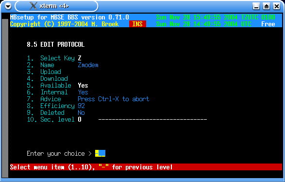

Last update 28-Nov-2004
MBSE BBS Setup - BBS Setup - File Transfer Protocols.
Introduction.
MBSE BBS has Xmodem, Ymodem, Ymodem-1K, Ymodem-G, Zmodem and Zmodem-8K (aka ZedZap) build in. In addition some external protocols are added to the setup but they are disabled by default. When the bbs is started the first time, a set of default protocols is created. The code used is based on the code from lrzsz package wich is based in the original code written by Chuck Forsberg.
Ymodem is receiver driven. That means if the user has selected plain Ymodem at the bbs and his local client is using Ymodem-G and when the user starts a download, the files are sent with Ymodem-G and not with plain Ymodem. With the same configuation an upload will be sent with plain Ymodem. With downloads, the Ymodem at the bbs will use what the client wants: 128 or 1K data blocks, crc of checksum, normal or streaming Ymodem-G.
Zmodem is transmitter driven. That means if the user has selected Zmodem-8K at the bbs and his local client is using normal Zmodem and when the user starts a download, the download is sent with Zmodem-8K. With the same configuration an upload will be sent with plain Zmodem. With uploads, the Zmodem at the bbs doesn't care what is being used, it will adapt to the client program.
These days (2004) nobody should use Xmodem anymore but when I wrote Ymodem you also get Xmodem because they are the same. Only with Xmodem the user has to type in the filename to both sides. If you enable it you are on your own and you may need to change the sources to make it really work because I didn't add typing in the filename at the bbs. Also, Xmodem is restricted to 8.3 filenames and the bbs uses long filenames.
Transfer Protocols Setup.
Select Key The key the user has to press to select this protocol. Name The name of this protocol. Upload The full path and filename and parameters to upload files. Download The full path and filename and parameters to download files. Available If this protocol is available. Internal If this is internal or external protocol. Advice A small advice to the user shown before the transfer starts. Efficiency The efficiency in percent. Has no real meaning. Deleted If this protocol must be deleted. Sec. level The security level a user must have to select this protocol.Some fields cannot be changed when this is an internal protocol, they are hardcoded.

 Back to BBS index
Back to BBS index